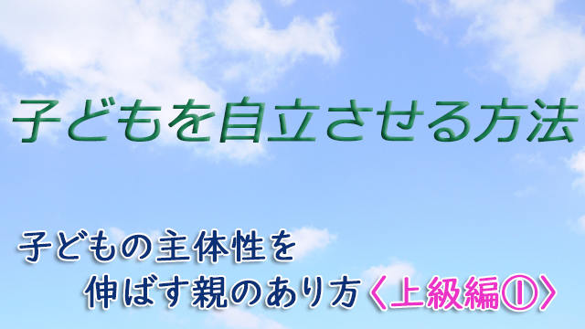

新しいヒューマニズム教育4つのポイント
やはりというか予想通り、緊急事態宣言が解除されましたね。
といっても当たり前ですがこれによって感染の危機が失くなったわけではありません。ウィルスはごく近くにあると自覚してぜひ自分を守り、自分を守ることによって他をも守るという姿勢は堅持したいですね。
ところで、長い自粛中に多くの人は外面的生活だけでなく、「意識の変化」も経験したのではないでしょうか。
私の聞いている範囲でも、家族の絆が強まった、あるいは日頃の友人との交流のありがたさが分かったという声が多く、不便な中にも決して小さくない気づきを得た数か月間ではなかったかと思います。
そう考えると、語弊があるかも知れませんがこの期間すべてが悪いことばかりではなかった。学ぶべきもの貴重な教訓もたくさんあったとも言えるのではないかと思います。
では学ぶべきもの、教訓とは何か。
考えつくことは社会のシステムの変化とそれに伴う人間のあり方の変化です。
今までのように、たとえば働き方にしても１つの場所に大勢が集まって密着密集的に動くのではなくて、自粛中に行っていたようにテレワークなどオンラインで済ませる方向に進むだろうということです。
この動きはAIなどデジタル化による人的労働の省力化として、以前から予見されていたことですが今回のコロナ騒動によってその動きは加速化されるのではないか。
その一方、人間にしかできない領域―人の抱える悩みや問題を正面から癒し解決すること―の大切さは増していくと考えられます。
そしてもっとも大きな変化は、この社会の変化と連動して「あるべき人間像そのものの変化」ではないかと思います。
それはこれまでのように生産性第一主義のあり方、会社や組織のために個々の人間が滅私奉公的に従属するあり方から、一人ひとりの人間が主体的にその才能を十分に発揮し、幸福を追究することによって社会そのものも豊かになるという、人間第一主義のあり方への転換です。
教育もその「人間第一主義」に沿ったものへとシフトされると私は思っています。
これまでの考え方―良い点数を取る良い学校に入る、大きな会社に入り出世するのが理想とする価値観―に代わって人間そのものを大切にとらえる、いわば新たなヒューマニズム（人間中心主義）への転換になると思います。
生産性や競争による人間の価値づけではなく誰でもがもつかけがいのない個性や才能を開花させる教育のあり方こそが問われると私は確信しています。
そんな新時代に向けて親が心がけるべき子どもの教育とは何かと考えたとき、私は以下の4点が大切と感じます。
第１は子どもに対し、不足を見るよりは充足を見い出すこと。第２に子どもの「ありのまま」を愛し認めること。第３に子どもが自分の考えを深め表現するよう奨励すること。そして第４に親自らが「自分の課題」と向き合うこと。以上の４点です。
動画では４点すべてを十分に語り尽くすことはできませんでしたが子育ての参考にして頂ければ幸いです。